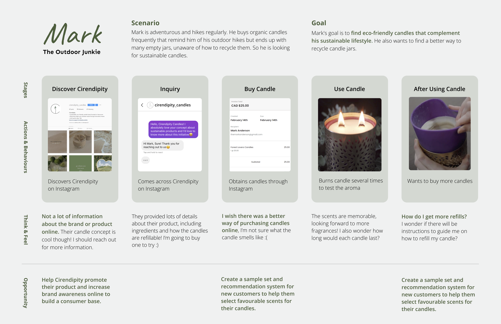
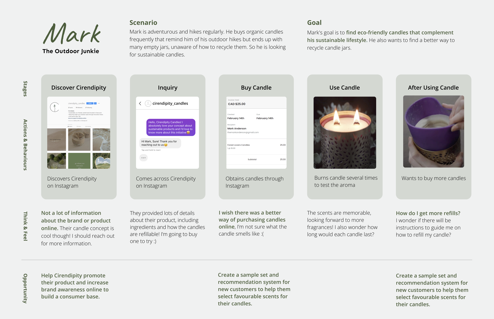
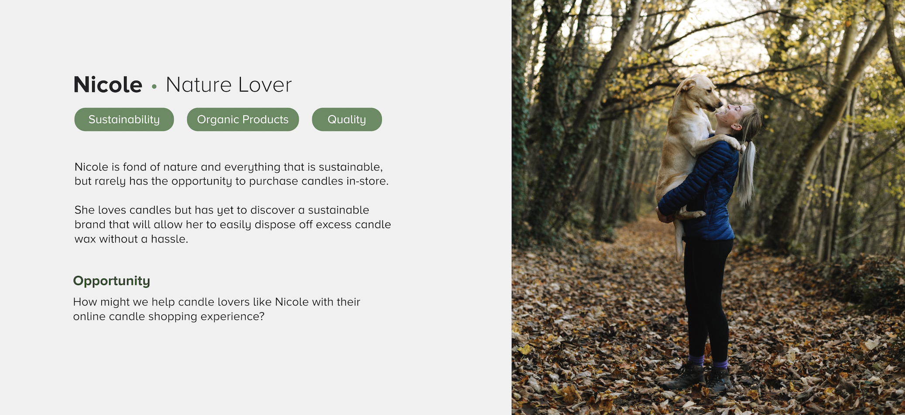

Cirendipity

Role:
UX designer
UI designer
Graphic Designer
Team:
Chinmayee Kusnur
Kayla Wu
Kaylie Au
Mahima Agrawal
Duration:
Jan 2022- April 2022
Spring 2022
Overview
In this project, we worked with a real
client, Cirendipity Candles, to understand their current user
experience through user research, interviews, surveys and
ethnography studies. Then, we developed a solution that showcases
Cirendipity Candles’ sustainable brand and silicone candle products
through various visual representations ranging from animations, and
infographics.
Initial Process
Our first step was to talk to the owners, Yoonji Choi
and Laura Ko and knowing the history of Cirendipity and their business practices.
After A bunch of interviews with two of them, we came up with three initial
key takeaways as mentioned below. They are the foundation of what we researched and
built further in the project.

Once we spoke to the founders, we surveyed their existing and
potential customer to understand their target market and consumer behaviours. It helped us
understand their candle purchasing habits.

Personas
Based on our initial research of the company as well as
it's target market, it was essential for us to know who we are designing for.
We came up with three personas who matched our research well.
Firstly, Angela, the Influencer represents being proactive in promoting sustainable practices through social media.
Secondly, Catherine represents the deal seeker portion of our data as many of our participants only bought candles when they were on sale.
Lastly, Mark represents the sustainable lifestyle, being very mindful of how his actions affect the environment.

Journey maps
Personas gave a surface level of understanding of the
target audience, but it was essential to dig deeper, so we created two journey
maps for Mark and Angela because they fit the target audience the best.
 


Looking at the journey map, I brought two important
insights to the team which was essential to understand. Firstly, Cirendipity
has very limited information about themsleves online and whatever they have
is only limited to instagram, which is not enough for them. Secondly, they
don't have any reviews on online about their candles, which makes it hard for
people to trust their brand and purchase candles from them.
Revised Personas
After making the journey maps, I still felt like we could dig
deeper to understand the ideal customer for Cirendipity. So, I revisited our meeting notes
with the founders saw that an ideal customer for them is someone who is highly passionate
about sustainability and appreciates high quality products made with organic materials.
This key insight gave me the opportinuty to articulate Nicole, who was the driving force to
formulate the design problem and focus.

Design Problem & Refined Design Focus
Here is our design problem and focus that we
formulated in order to prep for our participatory workoshop, which
was the next step of our project.

Participatory workshop
Before thinking of design solutions for the problem we outlined
earlier, we wanted to conduct two design workshops, one with the two cofounders was to better
understand their own perception of a sustainable brand. We wanted to focus more on
sustainability as that is a big part of Cirendipity’s brand identity. The second one was
with potential customers to see how they perceive Cirendipty’s sustainable brand ethos. Here are
my main takeaways-
1. Cirendipity and Candle Lovers have different perspectives on sustainability, both in terms of colours and keywords used to define it
2. Potential customers have not been informed about Cirendipity’s silicon candle cup which is their method of reducing single-use container waste and a key distinctive selling factor
3. Both groups have similar ideas about how to improve candle shopping experience
By the end of the workshop, we tweaked our design focus to
"How might we represent Cirendipity’s sustainable brand to their
potential customers and effectively communicate about their
silicon refillable candle products?"
Potential Design Solutions
The first concept it revolves around
having a consistent visual branding to represent Cirendipity's
sustainable brand, specifically for their instagram.
The solution is to have a consitant visual identity which will
connect Cirendipity with their potential customers with how they
both interpret sustainability through colours and images.

The second solution stems from the issue
that Cirendipity's potential customers have not been informed
about Cirendipity’s silicon candle cup which is their method of
reducing single-use container waste and a key distinctive selling
factor.
The main goal of this concept is to show an interactive tutorial
that will be designed to demonstrate the step-by-step process of
how to refill the candle wax using this silicone cup.
Reduce the information gap of the silicone candle cup and its
usage. It will also help Cirendipity build a connection with
their customers through an online interactive platform.

Final Solution
For the final design solution, we created a webpage that
showcases Cirendipity Candles’ sustainable brand and silicone candle products through various visual representations ranging from animations, and infographics.
Since Cirendipity currently does not have a website, having a website will help the business communicate their sustainable brand ethos professionally and increase their credibility.
By using imagery to represent Cirendipity, users will be able to quickly identify what makes Cirendipity different from other candle brands as well as communicate how sustainability is achieved through their silicone candle products.
Reflection
This project taught me a lot about teamwork
and how to speak to real clients. The project lasted four months and
there were many times when our opinions clashed, but it was a learning
experience to understand everyone's perspective, which helped build a
good final solution. Overall, I am very grateful for this project as
it helped me to think differently and work dynamically with a group of
fellow designers.